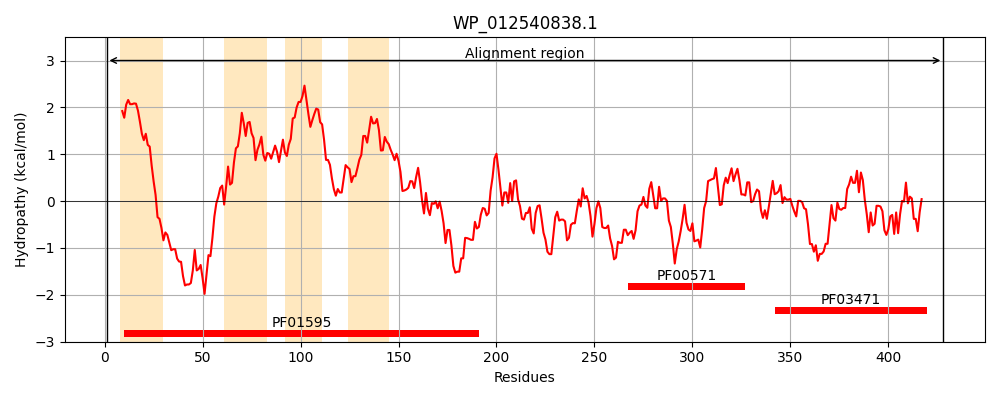
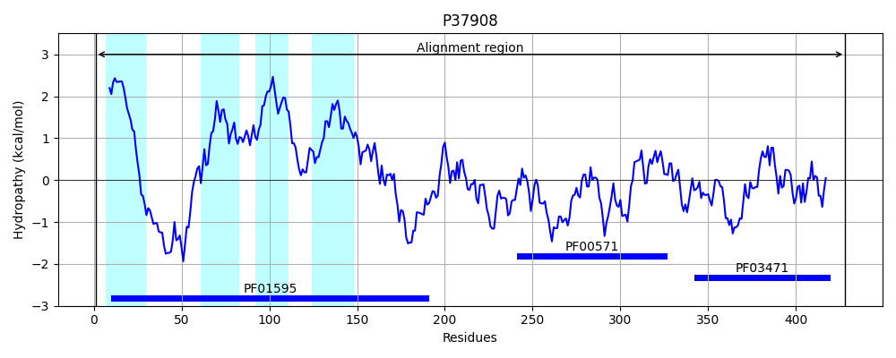
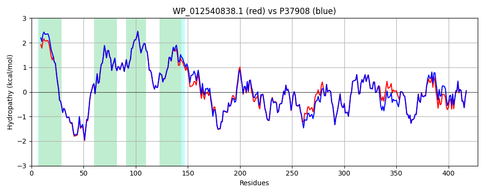

Hit Accession: P37908
Hit TCID: 1.A.112.2.5
Hit Description: gnl|BL_ORD_ID|10144 gnl|TC-DB|P37908|1.A.112.2.5 UPF0053 inner membrane protein YfjD OS=Escherichia coli (strain K12) GN=yfjD PE=1 SV=5
Mach Len: 428
e:0.000000
Query TMS Count : 4
Hit TMS Count: 4
TMS-Overlap Score: 4.400000
Predicted Substrates:None
BLAST Alignment:
Score: 1982 , Bit scores: 768 bits, E-value: 0.0e+00, Alignment length: 428, Percentage identity: 92
Query: 1 MEHISTTTLIITLIVMVIISAYFSGSETGMMTLNRYRLRHMAKQGNRPAKRVEKLLRKPDRLISLVLIGNNLVNILASALGTIVGMRLYGDAGVAIATGVLTFVVLVFAEVLPKTIAALYPEKVAYPSSFLLAPLQVLMMPLVWLLNTITRMLMRMMGIRTDTVISSALSKDELRTIVNESRSQISRRNQDMLLSVLDLEKVSVNDIMVPRNEIVGIDINDDWKSIVRQLTHSPHGRIVLYRDSLDDAISMLRVREAYRLMTEKKEFTKEIMLRAADEIYFVPEGTPLSTQLVKFQRNKKKVGLVVDEYGDIQGLVTVEDILEEIVGDFTTSMSPTLAEEVTPLNDGTVIIDGSANVREINKAFNWHLPEDEARTVNGIILEALEEIPVPGTRVRIEQYDIDILDVQDNMIKQVKVMPVKSLRESVAE 428
MEHISTTTLII LI+MV+ISAYFSGSETGMMTLNRYRLRHMAKQGNR AKRVEKLLRKPDRLISLVLIGNNLVNILASALGTIVGMRLYGDAGVAIATGVLTFVVLVFAEVLPKTIAALYPEKVAYPSSFLLAPLQ+LMMPLVWLLN ITRMLMRMMGI+TD V+S +LSK+ELRTIV+ESRSQISRRNQDMLLSVLDLEK++V+DIMVPR+EI+GIDINDDWKSI+RQL+HSPHGRIVLYRDSLDDAISMLRVREA+RLM+EKKEFTKE MLRAADEIYFVPEGTPLSTQLVKFQRNKKKVGLVV+EYGDIQGLVTVEDILEEIVGDFTTSMSPTLAEEVTP NDG+VIIDG+ANVREINKAFNWHLPED+ARTVNG+ILEALEEIPV GTRVRI +YDIDILDVQDNMIKQVKV PVK LRESVAE
Sbjct: 1 MEHISTTTLIIILIIMVVISAYFSGSETGMMTLNRYRLRHMAKQGNRSAKRVEKLLRKPDRLISLVLIGNNLVNILASALGTIVGMRLYGDAGVAIATGVLTFVVLVFAEVLPKTIAALYPEKVAYPSSFLLAPLQILMMPLVWLLNAITRMLMRMMGIKTDIVVSGSLSKEELRTIVHESRSQISRRNQDMLLSVLDLEKMTVDDIMVPRSEIIGIDINDDWKSILRQLSHSPHGRIVLYRDSLDDAISMLRVREAWRLMSEKKEFTKETMLRAADEIYFVPEGTPLSTQLVKFQRNKKKVGLVVNEYGDIQGLVTVEDILEEIVGDFTTSMSPTLAEEVTPQNDGSVIIDGTANVREINKAFNWHLPEDDARTVNGVILEALEEIPVAGTRVRIGEYDIDILDVQDNMIKQVKVFPVKPLRESVAE 428 | Protein Hydropathy Plots: |
|---|
|  |  |
Pairwise Alignment-Hydropathy Plot:
|
|---|
|  |